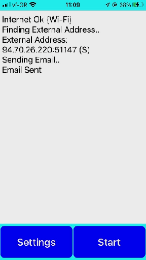

Κατά την κανονική λειτουργία της, η εφαρμογή βρίσκει πρώτα την εξωτερική της δημόσια διεύθυνση, και την στέλνει σε μήνυμα email στην ορισθείσα ηλεκτρονική διεύθυνση.
Όλες οι ενέργειες εμφανίζονται στην οθόνη ως εξής:

Με το πάτημα του "Start", ανοίγει τα εισερχόμενα μηνύματα φιλτράροντας αυτά που έχουν "Subject: My Ear" και βρίσκει το μήνυμα του μικροφώνου με την δική του εξωτερική δημόσια διεύθυνση.
Τέλος, αρχίζει την διαδικασία επαφής με το μικρόφωνο.